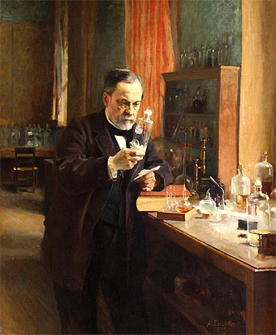
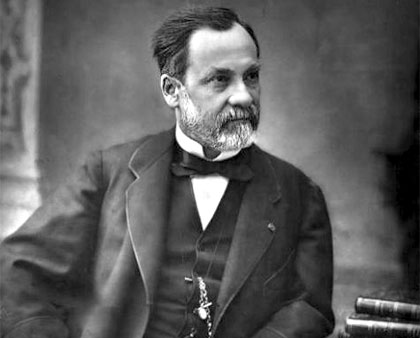

(Dole, Francia, 1822 - Marnes-la-Coquette, 1895) Químico y bacteriólogo francés, fundador de la microbiología y pionero de la medicina moderna. Desde los tiempos de Hipócrates (siglo V a.C.) se habían atribuido las enfermedades a abstractos desequilibrios de los humores internos del cuerpo humano. Hubo que esperar al siglo XIX para que, de la mano de geniales investigadores como Louis Pasteur y Robert Koch, quedase firmemente establecida la teoría del origen microbiano de las enfermedades infecciosas, según la cual éstas son provocadas por gérmenes patógenos ambientales que penetran en el organismo sano; la determinación de las causas concretas y seguras de una amplia gama de afecciones supuso el inicio de la actual medicina científica. Pasteur dio asimismo un impulso decisivo al desarrollo de las vacunas, siendo especialmente recordado por el éxito de su vacuna contra la rabia (1885).
De la fermentación a la generación espontánea

En 1848 fue nombrado profesor de física y química en el Liceo de Dijon, y tres meses después suplente en la cátedra de química de la Universidad de Estrasburgo, cátedra de la que sería titular en 1852, para pasar después (1854-1857) a la Universidad de Lille como profesor de química y decano de la Facultad de Ciencias. Con una orientación principalmente práctica, encaminada a resolver algunas dificultades con que topaban las industrias vinícolas y cerveceras de la región, Louis Pasteur emprendió en Lille sus conocidos estudios sobre la fermentación.Sus investigaciones le llevaron a corroborar, por un lado, la idea de que las levaduras eran las responsables de la producción de alcohol en la fermentación, y por otro, a descubrir que la producción en el proceso de fermentación de ciertos ácidos y sustancias indeseables (que agriaban el vino o la cerveza) era debida a la acción de microorganismos como las bacterias. Pasteur resolvió el problema con el simple método de someter a altas temperaturas las soluciones azucaradas iniciales; se eliminaba con ello las bacterias, evitando así la acidificación del producto final.
La teoría microbiana y las vacunas

Los estudios anteriores, en efecto, sugirieron a Pasteur una analogía entre la enfermedad y la fermentación: del mismo modo que la acción de microorganismos exteriores es la causa, por ejemplo, del deterioro de la leche, esos mismos microorganismos podían invadir un cuerpo sano y causar las afecciones. Llegó así a establecer, como consecuencia de sus trabajos, la llamada teoría microbiana o germinal de las enfermedades, según la cual muchas de éstas se deben a la penetración en un cuerpo sano de microorganismos patógenos. Pese a la incomprensión que suscitó (derivada en cierto modo del sentido común, para el que resulta sorprendente que seres microscópicos puedan matar a otros infinitamente más grandes), los resultados de sus ulteriores investigaciones acabarían avalando su hipótesis.